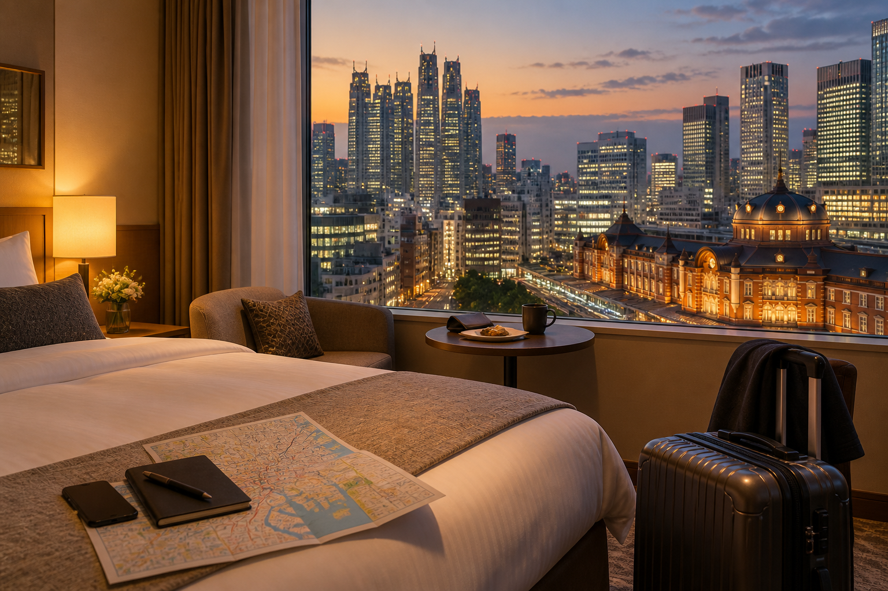
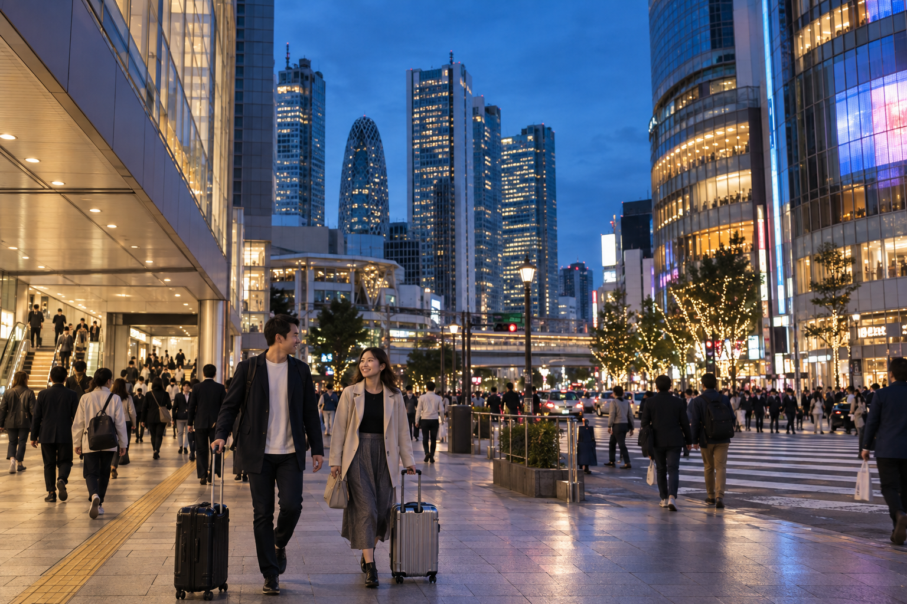
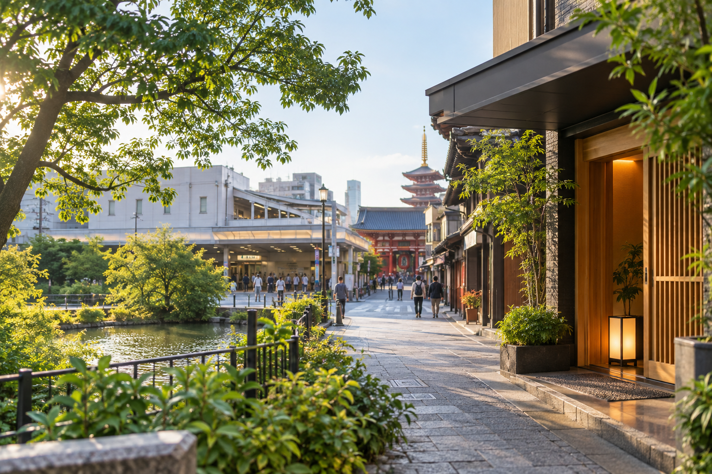

Where to Stay in Tokyo: Best Areas for First-Time Visitors
Choosing where to stay in Tokyo can affect your trip more than choosing the perfect hotel room. Tokyo is huge, and a hotel that looks central on a map can still leave you with long walks, inconvenient transfers, or limited evening options. For a first visit, the best area is usually one that gives you easy station access and fits the way you plan to spend your days.
There is no single neighborhood that is best for every traveler. Shinjuku suits visitors who want excellent transport and busy evenings. Shibuya works well for modern Tokyo, shopping, and nightlife. Tokyo Station is practical for travelers continuing to Kyoto or Osaka. Ueno can offer strong transport and easier Narita access, while Asakusa gives you a quieter, more traditional atmosphere.
This guide compares the best areas to stay in Tokyo based on first-time convenience, transport, airport access, nightlife, family travel, budget, and wider Japan itineraries. I am focusing on the area decision rather than recommending individual hotels because the right neighborhood should come before the specific property.
Best Areas to Stay in Tokyo at a Glance

| Area | Best For | Main Advantage | Main Trade-Off |
|---|---|---|---|
| Shinjuku | First-time visitors, nightlife, transport | Huge transport hub and endless dining | Very busy and station can be confusing |
| Shibuya | Modern Tokyo, shopping, younger travelers | Excellent atmosphere and western Tokyo access | Busy and often expensive |
| Tokyo Station / Marunouchi | First-time Japan routes, Shinkansen | Excellent intercity transport | Quieter at night than Shinjuku |
| Ginza | Couples, shopping, upscale stay | Central, polished and well connected | Higher accommodation prices |
| Ueno | Value, Narita access, families | Good transport and cultural attractions | Less nightlife than western Tokyo |
| Asakusa | T raditional atmosphere, quieter evenings | Character and eastern Tokyo sightseeing | Less convenient for western districts |
| Shinagawa | Haneda , Kyoto/Osaka connections | Airport and Shinkansen convenience | Less classic tourist atmosphere |
For many first-time visitors, I would narrow the decision first to:
Shinjuku, Shibuya, Tokyo Station, Ueno, or Asakusa.
Then choose based on your travel style.
What Makes a Good Tokyo Area for First-Time Visitors?
Do not judge a Tokyo hotel only by its distance from attractions.
I would look at six things.
1. Walking Distance to a Useful Station
This is more important than most first-time visitors expect.
A hotel described as “near Shinjuku” might still involve a long walk.
Check the actual route from:
hotel entrance → station entrance
A five-minute walk is very different from 15 minutes after a full sightseeing day.
2. Which Lines Serve the Station
A station with several useful connections can save time every day.
You do not need the station with the largest number of lines.
You need lines that fit where you plan to go.
For example, your Tokyo trip may include:
- ✓Asakusa
- ✓Ueno
- ✓Shibuya
- ✓Shinjuku
- ✓Ginza
- ✓Tokyo Station
A well-connected base reduces unnecessary transfers.
3. Airport Access
Your arrival and departure airports matter.
Tokyo is served by:
- ✓Haneda Airport
- ✓Narita International Airport
A hotel that makes your sightseeing easy but creates a difficult airport transfer may still be the wrong choice for a short stay.
Our Narita vs Haneda Airport: Which Tokyo Airport Is Better? guide covers the airport decision separately.
4. Your Wider Japan Route
If Tokyo is followed by:
Kyoto → Osaka
your departure station matters.
Tokyo Station and Shinagawa both have useful Tokaido Shinkansen connections toward Kyoto and Shin-Osaka.
That does not mean everyone should stay beside a Shinkansen station.
But it should be part of the decision.
5. What You Want Around the Hotel at Night?
Ask what you want after sightseeing.
Do you want:
- ✓Restaurants
- ✓Bars
- ✓Shopping
- ✓Quiet streets
- ✓Convenience stores
- ✓Family-friendly surroundings
- ✓Easy dinner without another train ride
This can matter more than being close to a morning attraction.
6. Your Budget
Accommodation prices can vary widely by:
- ✓Area
- ✓Season
- ✓Weekend
- ✓Room size
- ✓Booking date
- ✓Hotel category
Do not assume one neighborhood is always cheap or expensive.
Compare your actual dates.
The area should help you narrow the search before you compare individual properties.
Shinjuku: Best All-Round Base for Many First-Time Visitors

If someone asked me for one Tokyo area to check first, Shinjuku would usually be near the top of the list.
It combines:
- ✓Excellent transport
- ✓Restaurants
- ✓Shopping
- ✓Nightlife
- ✓Hotels across different categories
- ✓Easy access to western Tokyo
Shinjuku works especially well if your itinerary includes significant time around:
- ✓Shibuya
- ✓Harajuku
- ✓Meiji Jingu
- ✓Other western Tokyo areas
It also gives you plenty to do near your hotel in the evening.
Why Shinjuku Works So Well?
Shinjuku Station is a major transport hub with numerous railway and subway connections.
This gives you flexibility when traveling around Tokyo.
You can spend the day sightseeing elsewhere and return to an area where:
- ✓Restaurants stay active
- ✓Shops are nearby
- ✓Convenience stores are easy to find
- ✓Evening entertainment is available
For a first-time visitor who wants Tokyo to feel active from morning until night, Shinjuku is a strong choice.
Best For
Shinjuku works especially well for:
- ✓First-time visitors
- ✓Couples
- ✓Solo travelers
- ✓Nightlife
- ✓Food choices
- ✓Travelers using public transport heavily
- ✓Visitors who want activity near the hotel
Main Advantages of Staying in Shinjuku
Excellent Transport
Shinjuku connects with many parts of Tokyo.
This is its biggest advantage.
Strong Evening Options
After returning from sightseeing, you still have access to:
- ✓Restaurants
- ✓Shopping
- ✓Bars
- ✓Entertainment
You do not need another train just to find dinner.
Wide Accommodation Choice
Shinjuku has everything from simpler business-style hotels to larger premium properties.
That gives you more options across different budgets.
Main Disadvantages of Staying in Shinjuku
Shinjuku Station Is Complicated
This is the biggest issue for first-time visitors.
The station is enormous.
Different exits can leave you on completely different sides of the district.
During the first day or two, you may spend extra time learning:
- ✓Your hotel exit
- ✓Your railway line
- ✓Your route through the station
This becomes easier, but it can initially feel overwhelming.
It Can Be Very Busy
If you want:
- ✓Quiet evenings
- ✓Small neighborhood streets
- ✓A relaxed atmosphere
Shinjuku may feel too intense.
Hotel Location Within Shinjuku Matters
Do not book anything simply because the address says “Shinjuku.”
A hotel near the station and a hotel farther into the wider Shinjuku area can create very different daily routines.
Always check the actual walking route.
East Shinjuku vs West Shinjuku
There is a meaningful difference.
East Side
Better for:
- ✓Shopping
- ✓Restaurants
- ✓Entertainment
- ✓Kabukicho access
- ✓Livelier evenings
West Side
Better for:
- ✓Skyscraper district
- ✓Business atmosphere
- ✓Large hotels
- ✓Slightly calmer evenings in some sections
Neither side is automatically better.
Choose based on what you want outside the hotel.
Is Kabukicho a Good Place to Stay?
It can work for adults who specifically want nightlife and do not mind busy evenings.
However, I would not make the heart of Kabukicho my default recommendation for:
- ✓Families
- ✓Travelers wanting quiet nights
- ✓Visitors uncomfortable with nightlife districts
You can stay elsewhere in Shinjuku and still walk through Kabukicho when you want to experience it.
Is Shinjuku Good for Families?
Yes, but choose the specific hotel location carefully.
I would lean toward:
- ✓Quieter streets
- ✓Easier station access
- ✓Areas away from the busiest nightlife lanes
The district itself has excellent transport and food choices, which families can benefit from.
Is Shinjuku Good for a 3-Day Tokyo Trip?
Yes.
For three days, strong transport matters because you have less time to waste.
Shinjuku can work particularly well with our Tokyo 3-Day Itinerary for First-Time Visitors, which includes significant time in western Tokyo.
Is Shinjuku Good for a 5-Day Tokyo Trip?
Yes.
With five days, you will travel across more parts of Tokyo.
A major transport hub becomes even more useful.
Who Should Avoid Shinjuku?
Consider another area if:
- ✓Large stations stress you
- ✓You want quiet nights
- ✓Traditional Tokyo atmosphere matters most
- ✓Your route strongly favors eastern Tokyo
- ✓You prefer smaller neighborhood streets
For those travelers, Ueno or Asakusa may fit better.
Shibuya: Best for Modern Tokyo, Shopping and Nightlife
Shibuya is another excellent first-time base, but it has a different personality from Shinjuku.
It suits travelers who want to stay close to:
- ✓Modern Tokyo
- ✓Fashion
- ✓Cafes
- ✓Restaurants
- ✓Shopping
- ✓Nightlife
- ✓Harajuku and Omotesando
If the Tokyo you most want to experience is energetic, youthful, and modern, Shibuya may be your best match.
Why Stay in Shibuya?
Shibuya Station is served by multiple JR, Tokyo Metro, and private railway lines.
This makes it a strong base for western and central Tokyo.
It is particularly convenient for areas such as:
- ✓Harajuku
- ✓Omotesando
- ✓Shinjuku
- ✓Ebisu
- ✓Daikanyama
The neighborhood itself also remains active into the evening.
Best For
Shibuya works especially well for:
- ✓Couples
- ✓Younger travelers
- ✓Solo travelers
- ✓Shopping
- ✓Fashion
- ✓Restaurants
- ✓Nightlife
- ✓Visitors focused on modern Tokyo
Main Advantages of Shibuya
Excellent Location for Western Tokyo
If your priority areas include:
- ✓Shibuya
- ✓Harajuku
- ✓Meiji Jingu
- ✓Omotesando
- ✓Shinjuku
you start in an excellent position.
Strong Evening Atmosphere
Shibuya provides plenty of:
- ✓Restaurants
- ✓Cafes
- ✓Shopping
- ✓Entertainment
near your hotel.
Walkable Connections to Nearby Areas
Some surrounding neighborhoods can be reached comfortably on foot depending on your exact starting point.
This can reduce short train journeys.
Main Disadvantages of Shibuya
Accommodation Can Be Expensive
Its popularity and central location can make good rooms expensive on many dates.
Do not assume Shibuya is worth a large premium simply because it is famous.
Crowds
The station and surrounding commercial streets can be extremely busy.
If you prefer a quieter base, another neighborhood may suit you better.
Airport Access Is Not the Simplest for Every Flight
Shibuya has useful airport connections, but areas such as Shinagawa, Tokyo Station, or Ueno may fit certain airport routes more directly.
Check your exact flight rather than assuming central automatically means easiest.
Shibuya vs Shinjuku: Which Is Better?
This is one of the most common first-timer decisions.
Choose Shibuya If You Prefer:
- ✓Fashion
- ✓Modern Tokyo
- ✓Cafes
- ✓Younger atmosphere
- ✓Harajuku access
- ✓Shibuya nightlife
Choose Shinjuku If You Prefer:
- ✓Broader transport choice
- ✓More hotel options
- ✓Wider nightlife variety
- ✓Easy evening dining
- ✓A larger all-round transport base
Neither one is objectively better.
For many first-time visitors:
Shinjuku = more practical
Shibuya = more atmospheric
That is a useful starting distinction.
Is Shibuya Good for Families?
It can be.
However, I would carefully check:
- ✓Street noise
- ✓Hotel location
- ✓Walking distance to the station
- ✓Room size
- ✓Evening surroundings
Families wanting a calmer base may prefer another neighborhood.
Who Should Avoid Shibuya?
Look elsewhere if:
- ✓You want quiet evenings
- ✓Shopping and nightlife have low priority
- ✓You strongly prefer traditional Tokyo
- ✓Your hotel budget is limited
- ✓Your itinerary centers mostly on eastern Tokyo
In those cases, Ueno or Asakusa may offer better value for your travel style.
Tokyo Station and Marunouchi: Best for First-Time Japan Routes and Shinkansen Access
If Tokyo is only one part of a larger first Japan trip, Tokyo Station and Marunouchi deserve serious consideration.
This area is especially useful for routes such as:
Tokyo → Kyoto → Osaka
or:
Tokyo → Kyoto → Hiroshima → Osaka
Tokyo Station is one of the country's major rail hubs and provides Shinkansen connections toward other parts of Japan.
That can make departure day very easy.
Why Stay Near Tokyo Station?
The main advantages are:
- ✓Major rail connections
- ✓Tokaido Shinkansen access
- ✓Central location
- ✓Easy access to Ginza and Marunouchi
- ✓Restaurants and shopping around the station
- ✓Useful airport transport options
For a traveler using Tokyo as the first stop of a wider Japan trip, these practical benefits can be significant.
Best For
Tokyo Station and Marunouchi work particularly well for:
- ✓First-time Japan visitors
- ✓Kyoto/Osaka onward travel
- ✓Couples
- ✓Business travelers
- ✓Travelers wanting a polished central base
- ✓Visitors prioritizing convenience over nightlife
The Biggest Advantage: Easy Intercity Departure
If your next destination is Kyoto, staying near Tokyo Station can simplify the transfer.
Instead of:
hotel → local train → Tokyo Station → Shinkansen
your departure may become:
hotel → short walk → Shinkansen
That difference feels valuable when you have luggage.
Central Tokyo Location
Tokyo Station also gives you relatively convenient access to areas such as:
- ✓Ginza
- ✓Nihonbashi
- ✓Imperial Palace surroundings
- ✓Akihabara
- ✓Ueno
It does not place you directly inside western Tokyo, but transport connections make those areas reachable.
Main Disadvantages
Less Nightlife Than Shinjuku or Shibuya
Marunouchi is more business-focused and polished.
That can be a benefit or disadvantage.
If you want energetic streets outside the hotel late at night, Shinjuku or Shibuya may suit you better.
Accommodation Can Be Expensive
Hotels close to Tokyo Station can carry a premium.
Again, compare the actual value.
A hotel several stations away may save enough money to justify a short transfer.
Is Tokyo Station Good for Families?
Yes.
It can work particularly well for families who value:
- ✓Straightforward transport
- ✓Central location
- ✓Restaurants
- ✓Easier long-distance travel
However, the station itself is large.
Choose a hotel with a simple walking route rather than assuming every nearby address is equally convenient.
Tokyo Station vs Shinjuku
Choose Tokyo Station If:
- ✓Kyoto or Osaka is next
- ✓You prefer calmer evenings
- ✓Central Tokyo matters
- ✓Shinkansen convenience is valuable
Choose Shinjuku If:
- ✓Nightlife matters
- ✓Western Tokyo is a major focus
- ✓You want more evening energy
- ✓Local Tokyo transport variety matters more than Shinkansen proximity
This is one of the most useful accommodation decisions for a first Japan trip.
Do Not Choose an Area Only Because a Famous Attraction Is Nearby
One final rule before comparing the remaining areas:
Do not stay in a neighborhood simply because one famous attraction is there.
For example, being able to walk to one sight does not help much if the rest of your itinerary requires inconvenient transport every day.
A better first-time base usually gives you:
good station + useful lines + comfortable evenings + manageable airport route
rather than:
hotel beside one attraction.
That principle will guide the rest of the area comparisons.
Ginza: Best for Couples, Shopping and a Polished Central Stay
Ginza is a strong choice for travelers who want to stay in central Tokyo without the intensity of Shinjuku or Shibuya.
The area is known for:
- ✓Department stores
- ✓Restaurants
- ✓Japanese and international brands
- ✓Modern architecture
- ✓Cafes
- ✓Upscale hotels
- ✓Easy access to central Tokyo
Ginza is especially appealing if you want your hotel area to feel organized, walkable, and comfortable in the evening.
Why Stay in Ginza?
Ginza places you close to several useful central areas.
Depending on your exact hotel, you may have convenient access to:
- ✓Tokyo Station
- ✓Tsukiji
- ✓Yurakucho
- ✓Marunouchi
- ✓Nihonbashi
- ✓Imperial Palace surroundings
That makes it a practical base for travelers who want central Tokyo without sleeping beside one of the largest railway hubs.
Best For
Ginza is especially suitable for:
- ✓Couples
- ✓Shopping-focused travelers
- ✓Food-focused travelers
- ✓Travelers wanting a quieter premium base
- ✓Visitors who prefer central Tokyo
- ✓Travelers who do not need intense nightlife outside the hotel
Main Advantages of Ginza
Central Location
Ginza works well for a wide range of Tokyo sightseeing.
You are not locked into one side of the city.
Strong Restaurants and Shopping
You can return from sightseeing and still have plenty of options nearby.
This matters more on a five-day stay than many travelers expect.
You may not want another train journey just to find dinner.
Easier Evening Atmosphere
Ginza remains active, but the atmosphere is generally more polished than the busiest nightlife districts.
This can appeal to travelers who want energy without the intensity of Kabukicho or central Shibuya.
Main Disadvantages of Ginza
Higher Prices
Accommodation in and around Ginza can be expensive.
Compare several nearby stations rather than paying a large premium for a specific street name.
Less Nightlife
If bars, clubs, and late-night entertainment are major priorities, Shinjuku or Shibuya may fit better.
Luxury Reputation Can Be Misleading
You do not need a luxury budget to spend time in Ginza.
But the area's reputation can push hotel prices higher.
Look at actual room rates for your dates rather than assuming you either can or cannot afford it.
Is Ginza Good for First-Time Visitors?
Yes.
It is particularly strong if you want:
- ✓Central location
- ✓Easy restaurants
- ✓Shopping
- ✓A calmer hotel base
It may be less suitable if you want Tokyo's busiest nightlife directly outside the hotel.
Is Ginza Good for Families?
Yes.
Families may appreciate:
- ✓More orderly evening streets
- ✓Restaurants
- ✓Department stores
- ✓Central location
The main limitation may be accommodation price and room size.
Check both carefully.
Ginza vs Tokyo Station
These areas are close enough that the decision can come down to hotel price and exact location.
Choose Ginza If:
- ✓Shopping and dining matter more
- ✓You prefer a neighborhood atmosphere
- ✓You want polished evenings
Choose Tokyo Station / Marunouchi If:
- ✓Shinkansen access matters more
- ✓You leave for Kyoto or Osaka soon
- ✓You want the simplest intercity departure
Both are strong central-Tokyo choices.
Ueno: Best for Value, Narita Access and Eastern Tokyo

Ueno is one of the most practical alternatives to Shinjuku and Shibuya.
It combines:
- ✓Major transport
- ✓Cultural attractions
- ✓Parks
- ✓Markets
- ✓Restaurants
- ✓Often better-value accommodation
- ✓Strong Narita access
For first-time visitors who care more about convenience than nightlife, Ueno can be an excellent base.
Why Stay in Ueno?
Ueno sits in eastern Tokyo and gives you easy access to areas such as:
- ✓Asakusa
- ✓Akihabara
- ✓Yanaka
- ✓Tokyo Station
- ✓Other eastern and central districts
It also has strong rail connections for moving elsewhere in the city.
For travelers arriving through Narita Airport, the nearby Keisei Ueno/Nippori side can make airport access especially attractive.
Best For
Ueno works particularly well for:
- ✓Budget-conscious travelers
- ✓Families
- ✓Museum visitors
- ✓Travelers arriving at Narita
- ✓Visitors focused on eastern Tokyo
- ✓Travelers who prefer calmer evenings
Main Advantages of Ueno
Strong Transport
Ueno is a major rail area.
That means you can reach many parts of Tokyo without choosing one of the busiest western bases.
Narita Airport Convenience
This is one of Ueno's strongest selling points.
The Keisei Skyliner connects Narita Airport with the Ueno/Nippori side of Tokyo.
If your international flight uses Narita, this can simplify arrival and departure.
Culture Nearby
Ueno Park and nearby museums can be reached easily.
That does not mean you should stay here only because of the park.
But having useful attractions nearby is a bonus.
Ameyoko and Food Options
The area around Ameyoko provides:
- ✓Casual restaurants
- ✓Shops
- ✓Street atmosphere
- ✓Evening food options
Ueno is not dead after dark.
It is simply less nightlife-focused than Shinjuku.
Main Disadvantages of Ueno
Less Convenient for Western Tokyo
If most of your priorities are:
- ✓Shibuya
- ✓Harajuku
- ✓Shinjuku
you will travel across the city more often.
That is manageable, but it weakens Ueno's advantage.
Less Nightlife
Travelers wanting bars, clubs, and intense evening activity may prefer western Tokyo.
The Area Feels Different Street by Street
A hotel near Ueno Station can create a different experience from one deeper into another nearby neighborhood.
Check the actual surroundings.
Is Ueno Good for Families?
Yes.
I would consider it one of the stronger family options because it combines:
- ✓Transport
- ✓Parks
- ✓Food
- ✓Often better hotel value
- ✓Less intense nightlife
Families arriving at Narita may find the area particularly practical.
Ueno vs Shinjuku
This comparison is useful.
Choose Ueno If:
- ✓Narita access matters
- ✓You want better value
- ✓Eastern Tokyo is a priority
- ✓Museums and culture matter
- ✓You prefer quieter evenings
Choose Shinjuku If:
- ✓Western Tokyo is more important
- ✓Nightlife matters
- ✓You want more evening choices
- ✓You prefer one of Tokyo's largest transport hubs
Ueno vs Asakusa
Choose Ueno If:
- ✓Transport convenience comes first
- ✓You want better citywide connections
- ✓You want a more practical base
Choose Asakusa If:
- ✓Traditional atmosphere matters more
- ✓You prefer smaller streets
- ✓You want a quieter first impression
This distinction is important because both are in eastern Tokyo but offer very different hotel experiences.
Asakusa: Best for Traditional Tokyo and Quieter Evenings
Asakusa is one of the most distinctive places to stay in Tokyo.
Instead of waking up beside skyscrapers and giant railway stations, you stay around:
- ✓Senso-ji
- ✓Traditional streets
- ✓Smaller shops
- ✓Local restaurants
- ✓Sumida River
- ✓Views toward Tokyo Skytree
For travelers who want the hotel neighborhood itself to feel connected to older Tokyo, Asakusa is one of the strongest choices.
Why Stay in Asakusa?
The biggest reason is atmosphere.
Your morning can begin with a walk around streets that feel very different from:
- ✓Shinjuku
- ✓Shibuya
- ✓Ginza
- ✓Marunouchi
The area can also become calmer after daytime visitors leave.
That can make evenings more relaxed.
Best For
Asakusa works especially well for:
- ✓First-time visitors who value traditional atmosphere
- ✓Couples
- ✓Families
- ✓Photographers
- ✓Travelers who prefer quieter evenings
- ✓Visitors spending significant time in eastern Tokyo
Main Advantages of Asakusa
Strong Neighborhood Character
Asakusa feels like a destination rather than simply a transport base.
For some travelers, that matters.
Returning to a neighborhood you enjoy can improve the whole trip.
Quieter Evenings
Once the busiest sightseeing period ends, parts of Asakusa can feel much calmer.
That is useful if you prefer:
- ✓Early dinners
- ✓Evening walks
- ✓Less nightlife noise
Easy Access to Eastern Tokyo
Asakusa works naturally with areas such as:
- ✓Ueno
- ✓Tokyo Skytree
- ✓Sumida
- ✓Kappabashi
This fits particularly well with the eastern sections of our Tokyo 5-Day Itinerary for First-Time Visitors.
Main Disadvantages of Asakusa
Western Tokyo Takes Longer
If you plan multiple days around:
- ✓Shibuya
- ✓Harajuku
- ✓Shinjuku
Asakusa is less convenient than staying on the western side.
Fewer Late-Night Options
There are plenty of restaurants, but the area does not provide the same late-night energy as Shinjuku.
Transport Is Good, but Not the Same as a Huge Hub
Asakusa is well connected, but it does not function like Shinjuku or Tokyo Station.
You may make more transfers depending on the day's destination.
Is Asakusa Good for Families?
Yes.
Families may like:
- ✓Quieter evenings
- ✓Walkable local streets
- ✓Traditional atmosphere
- ✓Less intense nightlife
However, choose accommodation close enough to a useful station.
A charming hotel loses some value if every trip begins with a long walk.
Is Asakusa Good for Couples?
Yes, especially if you prefer atmosphere over nightlife.
Evening walks around the temple and river areas can feel much calmer than staying in a major commercial district.
Asakusa vs Shibuya
These are almost opposite Tokyo experiences.
Choose Asakusa If:
- ✓Traditional Tokyo matters
- ✓You prefer quiet evenings
- ✓Eastern Tokyo is a priority
- ✓Large commercial districts are less important
Choose Shibuya If:
- ✓Modern Tokyo matters
- ✓Shopping is a priority
- ✓Nightlife matters
- ✓Western Tokyo dominates your itinerary
Neither is better.
They suit different first-time travelers.
Shinagawa: Best for Haneda and Shinkansen Convenience
Shinagawa is one of Tokyo's most practical bases, but it is often overlooked because it does not have the same sightseeing reputation as Shibuya or Asakusa.
Its strength is logistics.
Shinagawa can be especially useful if:
- ✓You arrive at Haneda Airport
- ✓You leave Tokyo by Shinkansen
- ✓Your trip continues to Kyoto or Osaka
- ✓You want straightforward transport
- ✓You do not need a famous tourist neighborhood outside your hotel
Why Stay in Shinagawa?
Shinagawa Station is a major transport point.
It provides useful connections for:
- ✓Haneda Airport
- ✓Central Tokyo
- ✓Tokaido Shinkansen services toward Kyoto and Shin-Osaka
That combination makes it particularly strong for a wider Japan itinerary.
Best For
Shinagawa works well for:
- ✓First-night stays after Haneda arrival
- ✓Final Tokyo night before Haneda departure
- ✓Travelers continuing to Kyoto
- ✓Travelers with heavy luggage
- ✓Business travelers
- ✓Visitors prioritizing logistics
Haneda Access Is a Major Advantage
Keikyu services connect Haneda with Shinagawa.
This makes Shinagawa especially attractive after a long international flight.
Instead of several transfers, you can have a relatively simple route toward your hotel.
The exact route depends on your property and terminal.
Shinkansen Access
Shinagawa is served by the Tokaido Shinkansen.
That matters for routes such as:
Tokyo → Kyoto
or:
Tokyo → Shin-Osaka
You do not necessarily need to travel to Tokyo Station first.
For travelers staying nearby, starting the intercity trip at Shinagawa can simplify departure morning.
Main Advantages of Shinagawa
Excellent Logistics
This is its strongest feature.
Useful With Luggage
Fewer transfers can matter when carrying large bags.
Good for Open-Jaw Japan Routes
A common efficient route is:
Fly into Haneda → Tokyo → Kyoto → Osaka → fly home from Kansai
Shinagawa fits the beginning of that route well.
Main Disadvantages of Shinagawa
Less Tourist Atmosphere
You are not staying beside:
- ✓Senso-ji
- ✓Shibuya Crossing
- ✓Shinjuku nightlife
- ✓Ginza shopping streets
The area feels more functional.
Fewer Reasons to Spend the Whole Evening Nearby
There are restaurants and hotels, but most first-time visitors will probably spend their sightseeing hours elsewhere.
Should You Stay in Shinagawa for All Five Tokyo Days?
You can.
But I would choose it for a full stay mainly if transport convenience is more important to you than neighborhood atmosphere.
If you want your hotel area to feel like part of the sightseeing experience, another base may be more satisfying.
Shinagawa vs Tokyo Station
These are both strong logistics-focused choices.
Choose Shinagawa If:
- ✓Haneda is important
- ✓Kyoto/Osaka is next
- ✓You want a simpler western/southern Tokyo position
- ✓You find a better hotel rate
Choose Tokyo Station If:
- ✓Central Tokyo is a priority
- ✓Marunouchi/Ginza access matters
- ✓You want more major intercity connections nearby
- ✓You prefer the Tokyo Station atmosphere
What About Roppongi?
Roppongi can be a good base for certain travelers.
It is associated with:
- ✓Nightlife
- ✓Art
- ✓Modern architecture
- ✓Restaurants
- ✓International atmosphere
I would consider it mainly for visitors whose priorities include:
- ✓Museums
- ✓Nightlife
- ✓Upscale restaurants
- ✓Central positioning
However, I would not make Roppongi my default first recommendation for a general first-time Tokyo visitor.
Shinjuku, Shibuya, Ueno, Tokyo Station, Ginza, or Asakusa usually offer a clearer advantage for the most common first-trip needs.
What About Ikebukuro?
Ikebukuro can provide:
- ✓Major rail connections
- ✓Shopping
- ✓Restaurants
- ✓Entertainment
- ✓Anime and character-related interests
- ✓Potentially better hotel value than Shibuya or Shinjuku
It can be a smart base if:
- ✓You find a strong hotel deal
- ✓Anime interests matter
- ✓Western/northern Tokyo connections suit your route
But for a first visit, I would usually compare Shinjuku first unless Ikebukuro offers significantly better value.
Ikebukuro Can Be Better Than a Bad Shinjuku Hotel
This is worth remembering.
A good hotel:
3 minutes from Ikebukuro Station
may be a better choice than a cheaper Shinjuku property requiring:
15–20 minutes of walking
The neighborhood name does not matter more than the actual hotel location.
What About Ebisu?
Ebisu can suit travelers who want:
- ✓Good restaurants
- ✓A calmer atmosphere
- ✓Easy western Tokyo access
- ✓Less intensity than central Shibuya
It can be an excellent choice for repeat visitors or travelers who already know what they want.
For a first-time visitor, however, I would still compare Shibuya because it provides more immediate access to major sightseeing and transport.
Should You Stay Near Tokyo Disneyland?
Only if the theme parks are a major part of your trip.
For a general five-day Tokyo sightseeing plan, I would not choose a Disney-area hotel as the main base.
You would create longer journeys to many central Tokyo neighborhoods.
If Disney is a major priority, consider separating the theme-park portion of the trip from the general Tokyo stay.
Should You Stay Near Narita Airport?
Not for normal Tokyo sightseeing.
Narita is far from central Tokyo.
An airport-area hotel makes sense mainly when:
- ✓Your flight lands very late
- ✓You depart very early
- ✓You have a short connection
- ✓You do not plan to enter Tokyo that night
Do not save a small amount on accommodation and then spend hours commuting from Narita every sightseeing day.
Should You Stay Near Haneda Airport?
Again, not for a normal multi-day Tokyo sightseeing stay.
Haneda hotels are useful for:
- ✓Late arrival
- ✓Early departure
- ✓Overnight connection
For several full sightseeing days, move into Tokyo and choose a more useful base.
One Hotel or Split Your Tokyo Stay?
For most first-time visitors:
One hotel.
I would not split:
3 nights Shinjuku + 2 nights Asakusa
simply to experience two neighborhoods.
Tokyo transport already lets you visit both.
Changing hotels creates:
- ✓Packing
- ✓Check-out
- ✓Luggage transport
- ✓Check-in
- ✓Lost sightseeing time
Split the stay only when there is a clear logistical reason.
When a Split Stay Can Make Sense
Examples include:
First night near Haneda → main Tokyo hotel
after a very late arrival.
Or:
Main Tokyo hotel → airport hotel
before an unusually early flight.
These solve actual travel problems.
Changing hotels only for neighborhood variety usually does not.
Which Tokyo Area Gives the Best Value?
There is no permanent cheapest winner.
Hotel rates change by:
- ✓Travel date
- ✓Season
- ✓Events
- ✓Weekday
- ✓Room demand
- ✓Booking timing
However, travelers looking for better value should often compare:
- ✓Ueno
- ✓Asakusa
- ✓Ikebukuro
- ✓Areas one or two stations away from the most famous districts
Do not move far outside convenient Tokyo transport simply to save a small amount per night.
Calculate Value Across the Whole Stay
Imagine:
Hotel A
¥2,000 cheaper per night but requires a 15-minute extra walk and more transfers.
Hotel B
More expensive but 3 minutes from a useful station.
Across five days, Hotel B may give you several additional hours of usable trip time.
That is why the lowest room rate is not always the best value.
Station Distance Can Matter More Than Neighborhood
This is one of my strongest first-time hotel rules.
Compare:
Hotel in famous neighborhood, 15 minutes from station
against:
Hotel in less famous neighborhood, 3 minutes from station
I would often choose the second.
After:
- ✓20,000 steps
- ✓Dinner
- ✓Shopping
- ✓A full train ride
those extra 12 minutes feel very different from how they looked on the booking map.
Check the Actual Station Entrance
Hotel websites may say:
5 minutes from Shinjuku Station
but Shinjuku Station itself is enormous.
You need to know:
- ✓Which exit?
- ✓Which railway?
- ✓Is the entrance useful for your line?
- ✓Is the walking route simple?
The same principle applies around other large stations.
Room Size Matters in Tokyo
Tokyo hotel rooms can be compact.
Before booking, check:
- ✓Room size in square meters
- ✓Bed width
- ✓Luggage space
- ✓Bathroom layout
- ✓Number of beds
- ✓Whether suitcases can open comfortably
Do not judge room size only from wide-angle hotel photographs.
This is particularly important for:
- ✓Couples with two large suitcases
- ✓Families
- ✓Longer stays
Check Luggage Services Before Booking
For a multi-city Japan trip, check whether the property can:
- ✓Store luggage before check-in
- ✓Store luggage after check-out
- ✓Receive forwarded luggage
- ✓Help send luggage onward
This can make transfers much easier.
Our Luggage Forwarding in Japan: How Takkyubin Works guide covers the forwarding process separately.
The hotel page only needs this planning rule:
A property with useful luggage services can be more practical than a slightly cheaper hotel without them.
Best Tokyo Area by Traveler Type
If you still cannot decide, use your travel style as the tie-breaker.
| Traveler Type | Best Starting Area |
|---|---|
| First-time visitor wanting an all-round base | Shinjuku |
| Modern Tokyo, shopping and nightlife | Shibuya |
| Kyoto/Osaka after Tokyo | Tokyo Station or Shinagawa |
| Narita Airport convenience | Ueno |
| Haneda Airport convenience | Shinagawa |
| Traditional Tokyo atmosphere | Asakusa |
| Couples wanting a polished central base | Ginza |
| Families wanting value and calmer evenings | Ueno |
| Nightlife-focused traveler | Shinjuku or Shibuya |
| Shopping-focused traveler | Shibuya or Ginza |
| Culture and museums | Ueno |
| Quiet first-time stay | Asakusa or Ginza |
| Business-style logistics | Shinagawa or Marunouchi |
| Anime-focused traveler | Akihabara or Ikebukuro area |
This table is a starting point.
The actual hotel still needs to pass the:
station + room + price + airport + itinerary
test.
Best Area for Your First Tokyo Trip
If you want the shortest possible answer:
Choose Shinjuku If You Want the Safest All-Round Choice
Shinjuku is strong because it gives you:
- ✓Major transport
- ✓Restaurants
- ✓Shopping
- ✓Evening activity
- ✓Easy access to western Tokyo
It works for many travel styles.
The trade-off is crowds and station complexity.
Choose Shibuya If Modern Tokyo Is Your Main Priority
Shibuya suits travelers who want:
- ✓Fashion
- ✓Cafes
- ✓Shopping
- ✓Nightlife
- ✓Harajuku access
- ✓A younger atmosphere
It is less attractive if quiet evenings or low hotel prices matter more.
Choose Tokyo Station If Your Wider Japan Route Matters Most
This is one of the strongest choices for:
Tokyo → Kyoto → Osaka
The convenience of starting your Shinkansen journey nearby can be valuable, especially with luggage.
Choose Ueno If You Want Strong Value and Narita Access
Ueno is one of my favorite practical options for first-time visitors who do not need to stay in a famous nightlife district.
It offers:
- ✓Strong transport
- ✓Cultural attractions
- ✓Food
- ✓Narita access
- ✓Often competitive hotel prices
Choose Asakusa If Atmosphere Matters More Than Perfect Transport
Asakusa is better for travelers who want to wake up somewhere with more traditional character.
It is not the most efficient base for every western Tokyo day, but the neighborhood experience can compensate for that.
Choose Ginza If You Want a More Refined Central Stay
Ginza works well for:
- ✓Couples
- ✓Shopping
- ✓Dining
- ✓Central Tokyo
- ✓Quieter evenings
The main issue is price.
Choose Shinagawa If Logistics Matter More Than Neighborhood Atmosphere
Shinagawa is especially practical for:
- ✓Haneda
- ✓Kyoto
- ✓Osaka
- ✓Large luggage
- ✓Early onward travel
It is functional rather than highly atmospheric.
Best Tokyo Area Based on Airport
Your airport should influence the hotel decision, but it should not control the entire stay.
If You Arrive at Haneda
Strong areas to compare include:
- ✓Shinagawa
- ✓Shibuya
- ✓Shinjuku
- ✓Ginza
- ✓Tokyo Station
Shinagawa has one of the clearest transport advantages.
However, if you have five Tokyo sightseeing days, choosing Shinjuku or Shibuya may still make more sense if those areas better fit your daily plans.
Late Haneda Arrival
If the flight lands very late, consider:
- ✓Airport hotel
- ✓Shinagawa
- ✓A simple direct route to your main hotel
Do not create multiple train transfers just to reach your ideal neighborhood at midnight.
If You Arrive at Narita
Strong areas to compare include:
- ✓Ueno
- ✓Tokyo Station
- ✓Shinjuku
- ✓Shibuya
Ueno becomes particularly attractive because of its Narita rail connections.
Tokyo Station can also be practical depending on the airport service and hotel location.
Late Narita Arrival
Be more careful.
Narita is farther from central Tokyo.
Before booking, check:
- ✓Landing time
- ✓Immigration time
- ✓Last practical train
- ✓Airport bus
- ✓Hotel check-in
- ✓Taxi cost
A late arrival may justify an airport-area hotel for one night.
Do Not Choose an Entire Tokyo Stay Only for Airport Convenience
Airport transport happens:
once when you arrive
and:
once when you leave.
Your hotel affects every sightseeing day.
For a five-day stay, daily location can matter more than saving 20 minutes on airport transfer.
Balance both.
Best Area for a 3-Day Tokyo Itinerary
For only three full days, efficiency matters more.
I would compare:
- ✓Shinjuku
- ✓Shibuya
- ✓Tokyo Station
- ✓Ueno
depending on your airport and daily interests.
Our Tokyo 3-Day Itinerary for First-Time Visitors covers eastern, western, and central Tokyo.
That means a well-connected base is more valuable than staying beside one specific attraction.
My 3-Day Preference
For a general first trip:
Shinjuku is a strong all-round option.
But if you arrive at Narita and find a much better hotel around Ueno, I would not move across Tokyo simply because Shinjuku appears on more travel lists.
Best Area for a 5-Day Tokyo Itinerary
Five days changes the calculation slightly.
You have more local journeys, so:
- ✓Station convenience
- ✓Restaurant choice
- ✓Comfortable hotel room
- ✓Quiet enough sleep
become increasingly important.
For our Tokyo 5-Day Itinerary for First-Time Visitors, I would compare:
- ✓Shinjuku
- ✓Ueno
- ✓Tokyo Station
- ✓Shibuya
first.
Asakusa can also be excellent if eastern Tokyo atmosphere is a major priority.
Best Area if You Continue to Kyoto
If the next route is:
Tokyo → Kyoto
consider:
- ✓Tokyo Station
- ✓Shinagawa
more seriously.
Both provide access to the Tokaido Shinkansen.
That does not mean you must stay there.
For example, a Shinjuku hotel can still work perfectly well.
You simply travel to the departure station that morning.
The real question is:
How much do you value an easier departure day?
Best Area if You Continue to Osaka
The same principle applies.
For:
Tokyo → Osaka
Tokyo Station and Shinagawa are strong logistical bases.
If your Tokyo hotel is elsewhere, do not change hotels just for the final night unless it solves a real problem.
One local train journey before the Shinkansen is usually easier than moving hotels.
Best Area for a Tokyo-Only Trip
If the entire trip is Tokyo, intercity transport matters less.
That makes areas such as:
- ✓Shinjuku
- ✓Shibuya
- ✓Ginza
- ✓Ueno
- ✓Asakusa
more attractive based purely on your sightseeing and evening preferences.
For a Tokyo-only first trip, I would put more weight on:
- ✓Atmosphere
- ✓Dining
- ✓Local transport
- ✓Evening activity
and less on Shinkansen access.
Best Area for Couples
My strongest starting options are:
Ginza
Best for:
- ✓Polished atmosphere
- ✓Dining
- ✓Shopping
- ✓Central location
Shibuya
Better for:
- ✓Modern atmosphere
- ✓Cafes
- ✓Nightlife
- ✓Energy
Asakusa
Better for:
- ✓Traditional atmosphere
- ✓Quieter evenings
- ✓Neighborhood walks
The right answer depends on the type of trip you want.
Best Area for Families
I would compare:
- ✓Ueno
- ✓Asakusa
- ✓Tokyo Station
- ✓Quieter parts of Shinjuku
Family travel changes the priorities.
Look for:
- ✓Short station walk
- ✓Larger room
- ✓Easy food
- ✓Elevators
- ✓Fewer nightlife streets
- ✓Good airport access
- ✓Luggage storage
A famous neighborhood is less important than an easy daily routine.
Best Area for Solo Travelers
Shinjuku and Shibuya are strong because they remain active and offer many food options.
Ueno can be better if:
- ✓Budget matters
- ✓Museums matter
- ✓Narita access matters
Asakusa suits solo travelers who prefer a quieter stay.
Best Area for Nightlife
Choose:
Shinjuku or Shibuya
Shinjuku provides a wider range of late-night districts.
Shibuya gives you a younger, modern atmosphere.
Roppongi can also appeal to nightlife-focused travelers, but I would not make it the default first-time recommendation.
Best Area for Shopping
My order depends on shopping style.
Fashion and Youth Culture
Shibuya / Harajuku side
Luxury and Department Stores
Ginza
Electronics and Anime
Akihabara
Broad Mix
Shinjuku
Do not choose a shopping-focused hotel area unless shopping is important enough to affect several days.
Best Area for Traditional Tokyo
Choose:
Asakusa
with Ueno as another strong eastern option.
Asakusa provides more neighborhood character around:
- ✓Senso-ji
- ✓Smaller streets
- ✓Traditional businesses
- ✓Sumida River
It is the clearest contrast with modern western Tokyo.
Best Area for Food
Tokyo has excellent food almost everywhere.
I would not choose a hotel neighborhood based only on restaurants unless food is one of your main trip priorities.
Strong areas include:
- ✓Shinjuku
- ✓Shibuya
- ✓Ginza
- ✓Ueno
The better strategy is choosing a useful base that also gives you enough nearby dinner options.
Best Area for Budget Travelers
Start by comparing:
- ✓Ueno
- ✓Asakusa
- ✓Ikebukuro
- ✓Less-famous stations near major hubs
Do not assume a cheap hotel far outside central Tokyo saves money overall.
A lower room price can cost you:
- ✓More transport
- ✓More transfers
- ✓More walking
- ✓More travel time
Value matters more than the lowest nightly rate.
How Far From a Station Is Too Far?
For a first Tokyo stay, I prefer:
within about 5–10 minutes' walk
when possible.
A longer walk can still be fine if:
- ✓Hotel price is much better
- ✓Route is flat
- ✓Neighborhood is pleasant
- ✓You pack lightly
But remember that hotel walking happens twice every day.
A 15-minute walk can become:
30 minutes daily
before counting sightseeing.
Across five days, that adds up.
Check the Route, Not Just the Distance
A hotel can be:
500 meters from the station
but require:
- ✓Pedestrian bridges
- ✓Underground passages
- ✓Busy crossings
- ✓Stairs
- ✓Difficult luggage movement
Open the map and inspect the real route.
Recent guest reviews can also reveal whether the station connection is genuinely easy.
Should You Book Near a JR Station?
Not automatically.
Tokyo also uses:
- ✓Tokyo Metro
- ✓Toei Subway
- ✓Private railways
A hotel does not become bad because the nearest station is not JR.
Choose transport that fits your actual destinations.
This detailed network decision belongs in How to Get Around Tokyo: Subway, Trains and Transport.
Do You Need Breakfast Included?
It depends on your travel style.
Hotel breakfast can be useful if:
- ✓You want an early start
- ✓You have children
- ✓Finding breakfast is stressful
- ✓You prefer a substantial morning meal
Skip it if:
- ✓You like cafes
- ✓Convenience-store breakfast is fine
- ✓You want to try different food
- ✓Hotel breakfast significantly raises the room price
Do not choose an inferior hotel only because breakfast is included.
Hotel vs Apartment in Tokyo
Hotels are easier for most first-time visitors.
They may provide:
- ✓Reception
- ✓Luggage storage
- ✓Forwarded luggage handling
- ✓Help with local questions
- ✓Easier check-in
Apartments can work for:
- ✓Families
- ✓Longer stays
- ✓Travelers wanting kitchen facilities
But check:
- ✓Staff availability
- ✓Luggage handling
- ✓Check-in process
- ✓Local accommodation rules
An unstaffed rental can be less convenient during a first multi-city Japan trip.
Business Hotels Can Be Excellent Value
Do not dismiss Japanese business hotels because the name sounds corporate.
They can offer:
- ✓Good station locations
- ✓Clean rooms
- ✓Private bathrooms
- ✓Reliable service
- ✓Reasonable prices
The main trade-off is room size.
For solo travelers or couples packing light, they can provide excellent value.
Should You Pay More for a Larger Room?
For a five-night stay, sometimes yes.
Compare:
small room + two large suitcases
against:
slightly larger room + enough space to unpack
A cramped room can become annoying after several days.
Room size matters more on a long stay than a single overnight stop.
Tokyo Hotel Booking Checklist
Before clicking “Book,” check each of these.
Location
- ✓Exact neighborhood
- ✓Nearest station
- ✓Walking time
- ✓Useful railway/subway lines
- ✓Airport route
- ✓Route to your next Japan destination
Room
- ✓Room size
- ✓Bed size
- ✓Number of beds
- ✓Bathroom
- ✓Luggage space
- ✓Air conditioning/heating
- ✓Non-smoking status if important
Hotel Services
- ✓Reception hours
- ✓Luggage storage
- ✓Luggage forwarding
- ✓Laundry
- ✓Elevator
- ✓Check-in time
- ✓Check-out time
Price
- ✓Total stay price
- ✓Taxes
- ✓Cancellation policy
- ✓Breakfast cost
- ✓Extra guest charges
Compare the final price, not only the rate shown first.
Recent Reviews
Look specifically for comments about:
- ✓Station distance
- ✓Noise
- ✓Room size
- ✓Cleanliness
- ✓Luggage
- ✓Staff
- ✓Wi-Fi
- ✓Bed comfort
Do not rely only on the overall review score.
Common Tokyo Accommodation Mistakes
Booking the Cheapest Hotel Without Checking the Station
A cheap room is not good value if it wastes time every day.
Assuming All Shinjuku Hotels Are Near Shinjuku Station
The wider district is large.
Check the exact location.
Choosing a Hotel Beside One Attraction
Your itinerary covers the whole city.
Transport access matters more.
Splitting the Tokyo Stay Without a Reason
Changing hotels wastes time.
Use one base unless the move solves an airport or travel problem.
Ignoring Room Size
Tokyo rooms can be compact.
Check measurements.
Ignoring Luggage
Two large suitcases can completely change how comfortable a small room feels.
Choosing a Nightlife Street for a Family
The general neighborhood may be good while one specific block is not ideal.
Inspect the map.
Booking Near Narita for a Multi-Day Tokyo Stay
Airport convenience does not compensate for daily long-distance commuting.
Paying Too Much for a Famous Area
Being in Shibuya is not automatically worth a major premium over a strong hotel nearby.
Ignoring Cancellation Rules
Tokyo prices can change, and your itinerary may change too.
Know your booking conditions.
Forgetting the Next Destination
If Kyoto is next, consider departure logistics before choosing the hotel.
My First-Time Tokyo Area Recommendations
If I were narrowing the options for a typical first trip, I would use this order:
Best Overall: Shinjuku
Choose it for the strongest mix of:
- ✓Transport
- ✓Food
- ✓Evening activity
- ✓Hotel choice
Best for Modern Tokyo: Shibuya
Choose it if:
- ✓Shopping
- ✓Fashion
- ✓Cafes
- ✓Modern atmosphere
are central to your trip.
Best for Intercity Travel: Tokyo Station
Especially strong for travelers continuing to Kyoto or Osaka.
Best Value + Narita Access: Ueno
One of the strongest practical choices.
Best Traditional Atmosphere: Asakusa
Choose it when neighborhood character matters more than having the biggest transport hub.
Best Upscale Central Base: Ginza
Strong for couples, dining, shopping, and a calmer central stay.
Best Logistics Base: Shinagawa
Excellent for Haneda and Shinkansen travel.
- ↗
- ↗
- ↗
Frequently Asked Questions
What is the best area to stay in Tokyo for first-time visitors?
Shinjuku is one of the strongest all-round choices because of its transport, restaurants, shopping, and evening activity. Other areas may be better depending on your airport and travel style.
Is Shinjuku or Shibuya better for a first visit?
Shinjuku is usually more practical, while Shibuya offers a stronger modern Tokyo atmosphere. Both are excellent first-time bases.
Is it better to stay near Tokyo Station?
It can be, especially if you continue to Kyoto or Osaka by Shinkansen. It is also a strong central base for travelers who prefer quieter evenings.
Is Ueno a good area to stay in Tokyo?
Yes. Ueno offers strong transport, useful Narita access, museums, food, and often good accommodation value.
Is Asakusa a good place to stay for first-time visitors?
Yes, especially for travelers who prefer traditional atmosphere and quieter evenings. Western Tokyo takes longer to reach than from Shinjuku or Shibuya.
Is Ginza a good place to stay?
Yes. Ginza is central, polished, well connected, and particularly attractive for couples, shopping, and dining.
Is Shinagawa a good area for tourists?
Yes, especially if Haneda Airport or Shinkansen travel toward Kyoto and Osaka is important. Its main weakness is that it feels more functional than tourist-focused.
Should I stay in one Tokyo hotel?
Usually yes. Tokyo's transport makes changing hotels unnecessary for most first-time visits.
How close should my hotel be to a station?
Within around 5–10 minutes on foot is a useful target for most first-time travelers.
Is it worth paying more to stay near a station?
Often yes, within reason. A convenient station can save time and energy every day.
Should I stay in Shinjuku with children?
You can, but choose a quieter part of the area away from the busiest nightlife streets and check the hotel-to-station route.
What is the best Tokyo area for families?
Ueno, Asakusa, Tokyo Station, and quieter parts of Shinjuku are all worth comparing.
What is the best area for nightlife?
Shinjuku and Shibuya are the strongest general choices.
What is the best area for shopping?
Shibuya for modern fashion, Ginza for upscale shopping, and Shinjuku for a broad mix.
What is the best area if I land at Narita?
Ueno is especially practical, but the final choice should also fit the rest of your Tokyo itinerary.
What is the best area if I land at Haneda?
Shinagawa has excellent airport access, while Shibuya and Shinjuku may offer a stronger sightseeing base for a longer stay.
Where should I stay if I go to Kyoto after Tokyo?
Tokyo Station or Shinagawa can simplify Shinkansen departure, but you do not need to stay there if another Tokyo area better fits your sightseeing.
Should I stay near Tokyo Disneyland?
Only if Disney is a major part of your trip. It is not the best base for general Tokyo sightseeing.
Is an apartment better than a hotel?
Not automatically. Hotels are often easier for a first visit because of reception, luggage storage, and forwarding services.
Final Thoughts
The best area to stay in Tokyo is the one that makes your whole trip easier, not simply the neighborhood with the most famous name. Shinjuku is the strongest all-round choice for many first-time visitors, Shibuya suits modern Tokyo and nightlife, Ueno offers strong value and Narita access, Asakusa provides traditional atmosphere, Tokyo Station and Shinagawa simplify onward travel, and Ginza gives you a polished central base. Once you narrow the area, choose a hotel close to a useful station, check the real walking route and room size, and make sure the property fits your airport and wider Japan itinerary.